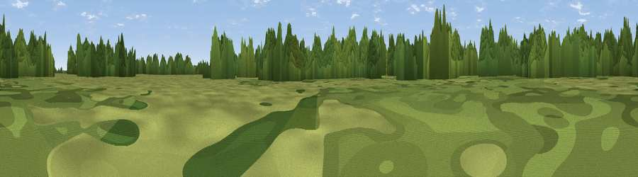

Viewpoint near Creeton
#44027 in England · top 86% of its area beats it · near CreetonThe view, rendered

A 360° render of this exact spot computed from the terrain model, tree cover and land cover — summer colours, afternoon light, calibrated against photographs of famous viewpoints. Real trees, hedges and buildings will differ in detail.
The panorama
Grey silhouette: terrain skyline in each direction (720 bearings, Earth curvature and refraction included). Dashed green: skyline with trees (+15 m) and buildings (+8 m) as obstacles. Blue strip: how far the ground is visible on each bearing.
Where the view opens
Wedge length = distance to the farthest visible ground on that bearing (vegetation-aware). Rings at 10, 25 and 50 km.
What fills the view
42% woodland · 39% grassland · 18% cropland
Angular shares of the visible panorama (visual magnitude), not map area. Landscape diversity 0.46 (0–1 Shannon).
Key numbers
More beautiful places nearby
The staircase of upgrades: each row has a higher view potential than everything closer. Driving times are estimates from straight-line distance, calibrated against real road routing — check an actual route before setting out.
| Place | Direction | Drive | Score |
|---|---|---|---|
| Viewpoint near Witham on the Hill | SSE · 4 km | ~9 min | 26.1 |
| Viewpoint near Edenham | E · 5 km | ~11 min | 35.9 |
| Viewpoint near Edenham | NE · 5 km | ~12 min | 39.9 |
| Viewpoint near Toft | ESE · 6 km | ~13 min | 49.0 |
| Viewpoint near Belton | NNW · 21 km | ~36 min | 51.0 |
| Viewpoint near Barrowby | NW · 22 km | ~37 min | 53.5 |
| Viewpoint near Great Gonerby | NW · 23 km | ~38 min | 59.8 |
| Viewpoint near Great Gonerby | NNW · 23 km | ~38 min | 62.0 |
52.76511, -0.48383 · source: osm peak · position refined by local search. Computed location — check access rights before visiting.